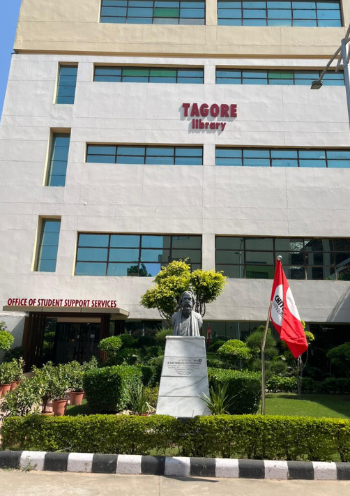
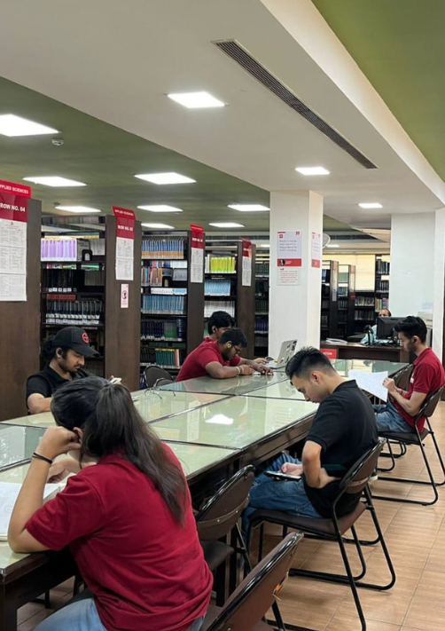
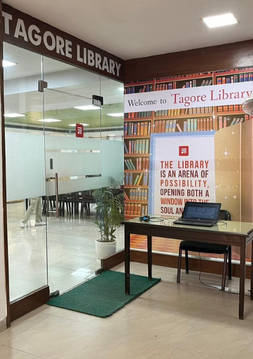
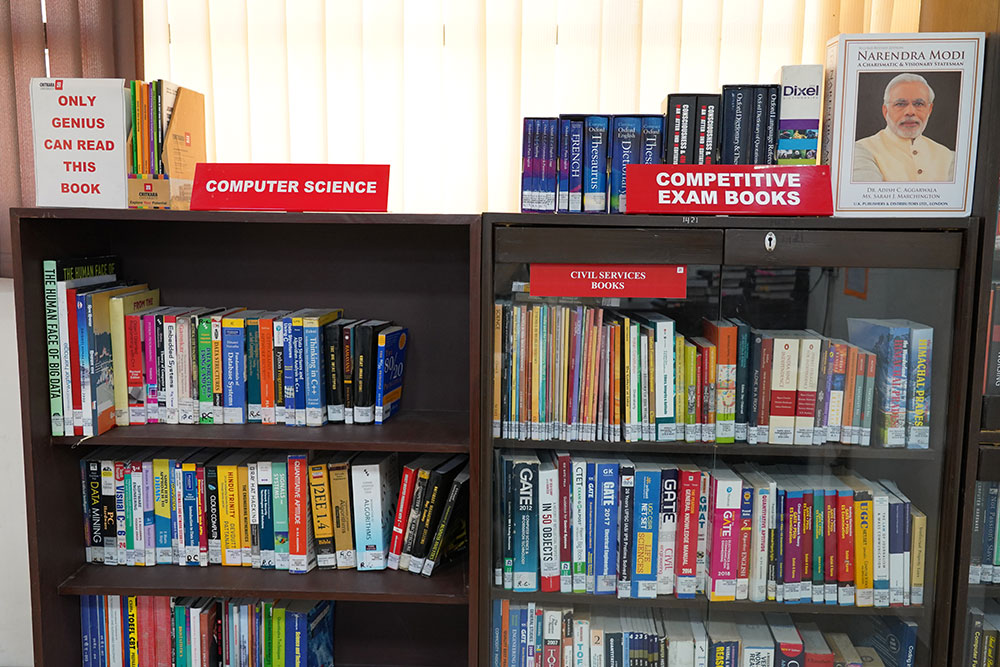
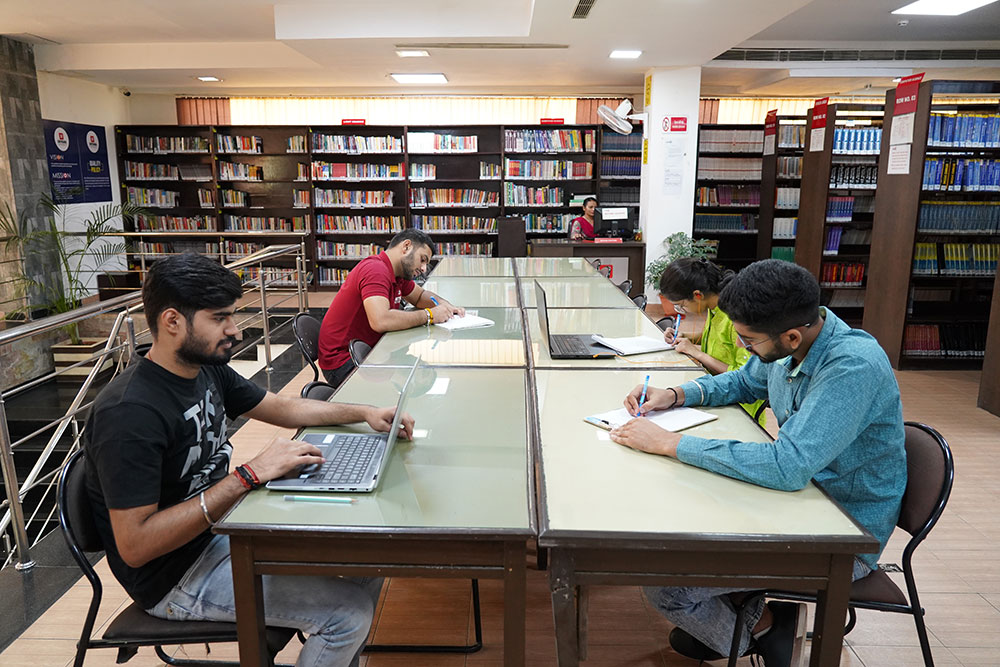
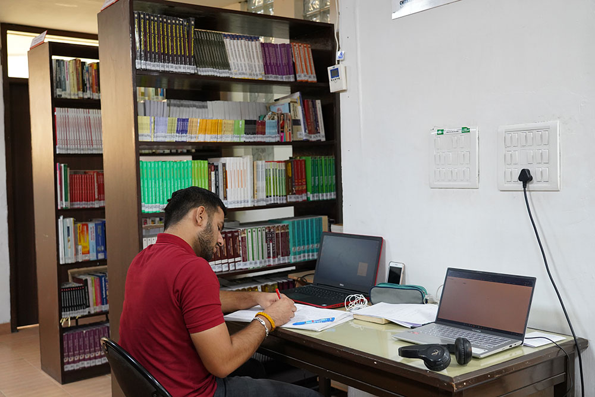

The Tagore Library has been serving the information needs of faculty, staff, and students at the university and is a foundation of academic and research activities. In addition to the central library, Chitkara University has two branch libraries, the nursing library and the pharmacy library. The Library is located in a three-story building; the First floor is dedicated to the reading hall, which is open from 9:00 am to 9:00 pm. There is also a Reference Section, Periodicals Section, Circulation Section, and a reading room on this floor. Along with the return counter, the second floor houses the stack area and Digital Information section. The third floor houses a dedicated reading hall. Tagore Library is well equipped with modern facilities and resources (print and electronic) in the form of CDROM, DVD-ROM, online databases, video cassettes, patents, standards, thesis, reports, e-books, e-journals, etc. The Digital Library section of the Tagore Library has developed an institutional digital repository using world-renowned software DSpace, which preserves the institute's intellectual output for posterity. Dedicated staff assists students in navigating the library collections and finding information on specific topics. Library spaces inspire students to conduct research and collaboration. The interdisciplinary environment of the library transforms students into lifelong learners. The Tagore library strongly believes in Academic integrity. Besides more than 41,997 books and 52 subscriptions to periodicals, the library also houses 2,86,920 e-journals and 69,73,579 e-books. The library has central air conditioning, Wi-Fi, and can seat 395 people. Library subscribed to several databases, including IEEE, Knowledge-Hub, EBSCO, Proquest, and DELNET.
Visit Us to Know MoreWe provide various Open Access Resources to the students.
"Explore the heart of learning through captivating images of Chitkara University's Tagore library's treasures."



Chitkara University's Tagore Library offers a range of facilities to support students and researchers, including an extensive collection of books, journals, and digital resources. The library features a digital library, comfortable reading and study areas, computer facilities with internet access, and high-speed Wi-Fi. Users can access expert reference services, participate in interlibrary loans, and attend workshops to enhance research skills. An online catalog simplifies resource searching, making the library an essential hub for academic success at Chitkara University.

The extensive collection of books and journals at Chitkara University's Tagore Library encompasses a wide variety of subjects and disciplines, providing students and faculty access to essential academic resources. This collection includes textbooks, reference materials, research publications, and scholarly journals, ensuring that users can find both foundational knowledge and the latest research in their fields. The diverse range of materials supports coursework, research projects, and independent study, making it a vital resource for the academic community.

The comfortable reading rooms at Chitkara University's Tagore Library are designed to provide a quiet and conducive environment for studying and reading. These spaces are equipped with ample seating, good lighting, and a peaceful atmosphere, allowing students and faculty to focus on their work without distractions. The reading rooms cater to individual study needs as well as group discussions, making them ideal for both personal study sessions and collaborative projects. Overall, they enhance the library experience by promoting concentration and productivity.

The computer facilities with internet access at Chitkara University's Tagore Library provide users with essential resources for research and academic work. These facilities include computers equipped with the latest software and high-speed internet connectivity, allowing students and faculty to access online databases, e-books, and other digital resources. This setup enables users to conduct research efficiently, complete assignments, and engage with a wide range of academic materials. Additionally, the availability of computers supports collaborative projects and enhances the overall learning experience within the library.
Chitkara University's Tagore Library is highly praised for its extensive collection of resources and a conducive study environment. Students appreciate the supportive staff and the quiet spaces that enhance their learning experience.
The Tagore Library is a peaceful haven for studying, with a vast collection of books that really supports our coursework
I love the quiet atmosphere and helpful staff at Tagore Library; it’s my go-to place for research and studying.